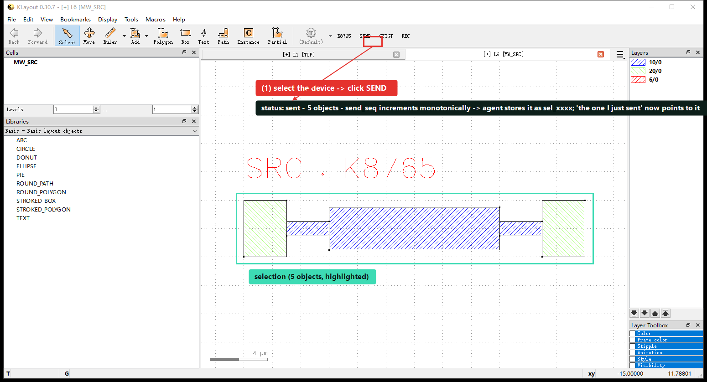
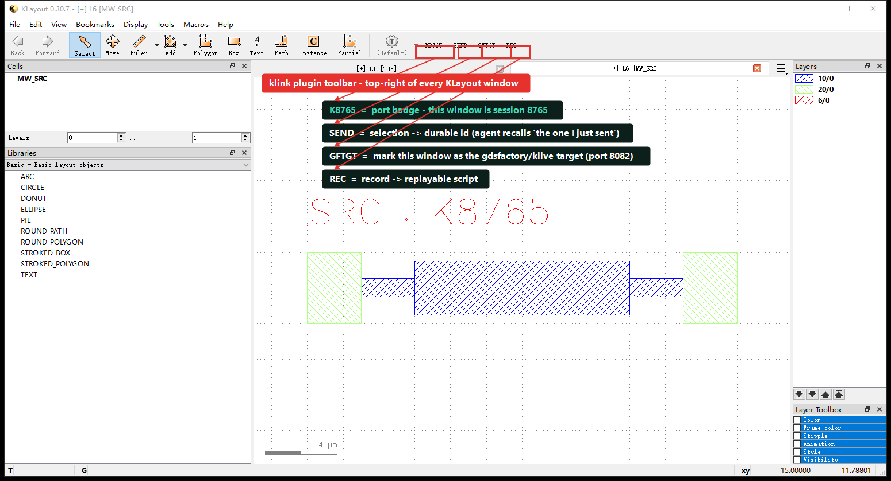
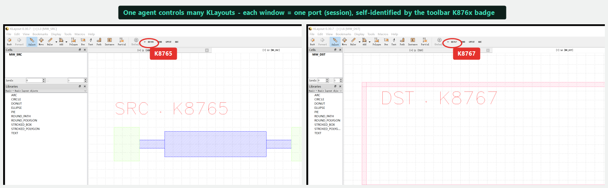
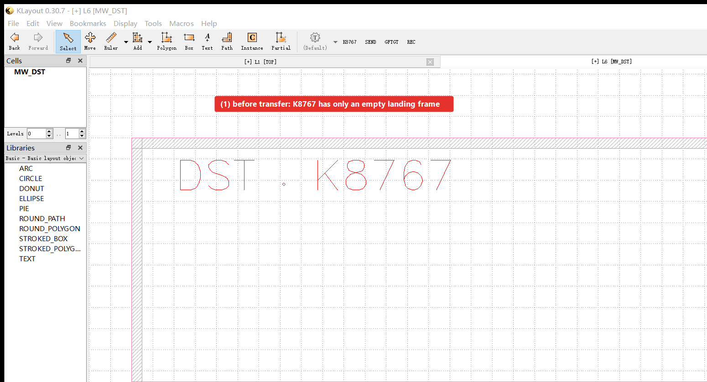
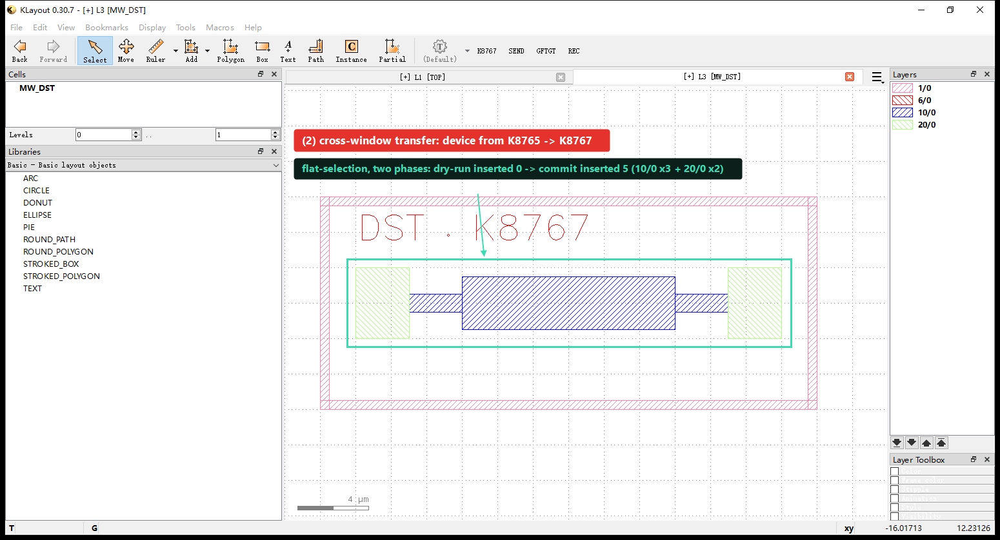
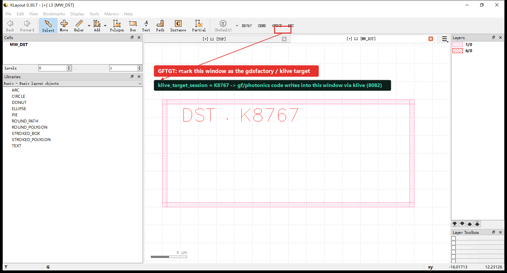

One catalogue, two faces
klink's control surface has two faces: the Python client KLinkClient and the same tools exposed over MCP. Both come from the live plugin's method registry — no hand-maintained list that can drift. Every tool's function, parameters and examples are in the MCP Tool Reference; this page ties them into an interactive loop — each section below is "what it is → what a human clicks → what an agent calls, and its real return", with real screenshots, read start to finish on this one page.
from klink import KLinkClient
with KLinkClient() as c:
print([m["name"] for m in c.methods()["methods"]])SEND selection memory — what "this area" means
The biggest friction in human + agent collaboration is "which area do you mean?". klink solves it with SEND: you select geometry in KLayout and click the plugin's SEND toolbar button, and the selection is recorded as a stable id such as sel_0006 in session-scoped memory (.klink/sessions/<id>/interaction_context.jsonl). From then on "just sent", "this area", "that one" resolve to exact geometry, not a screenshot.
# the human way: select geometry → click SEND on the toolbar
# the agent-equivalent call:
selection.send_context(source="tutorial_demo")
# → {"status": "sent", "count": 5, "send_seq": 5}
SEND on the toolbar. Returns status: sent · count 5 · send_seq 5 — this selection is now a durable entry in the agent's memory (something like sel_0005), and "the one I just sent" refers to it later.| Tool | Use |
|---|---|
interaction.selection.recent | Recent SENDs (default latest 5, by order, not age). |
interaction.selection.latest | The latest SEND. |
interaction.selection.get | Read an exact record by id. |
interaction.selection.label | Name/describe an important selection. |
interaction.context | Live selection + recent SEND memory together. |
selection.get is the live current selection; interaction.* is the durable memory of what was explicitly SENT. Because minutes of layout work can pass between a SEND and the message referring to it, memory is resolved by order/count, not age. interaction.context returns the current selection and recent SENDs together so the agent can tell which one the user means.
Two deliberate design choices: (1) explicit SEND rather than passively watching every click — only a selection the user actively sends becomes a sel_000N, filtering out exploratory-click and mis-select noise; (2) memory lives outside the plugin (on the bridge) — the plugin holds only "right-now" zero-layer facts (selection.get + the event stream), while session-scoped memory, id assignment and language resolution live in the MCP bridge's interaction.*, persisted per session to disk JSONL.
send_seq before broadcasting it, so a SEND made while no agent is listening is not lost — it returns status: journaled_no_listener, which still counts as success; the bridge catches up from the journal and deduplicates by send_seq next time it connects.
A second example, same button: photonic ports. Select two ports on net link0 (P0 on a custom device, o1 on an MMI) → SEND — same fields, just different numbers:
selection.send_context(source="gf_tutorial")
# → {"status": "sent", "count": 2, "send_seq": 2}
SEND to hand two link0 ports to the agent, returning count 2 · send_seq 2. The cell tree on the left shows klink_port.P0 (link0) and the MMI's ports.One agent, many KLayouts
Each KLayout window binds a port (the first free one in 8765–8799) and registers as a session; the toolbar's K876x badge is that window's self-identification. One MCP bridge can drive all of them at once — they are equal peers, no port has a "working" or "LVS" role; the agent addresses windows by an explicit session argument, never by "whichever window has focus".

K8765 is the port badge telling you this window is session 8765; SEND, GFTGT, and REC (recorder) are the three entry points humans and agents share — the latter two are covered below under "cross-session transfer / klive" and "recorder".Because windows are addressed by port rather than by "current focus", an agent can read in one window and write in another without shuffling anything to the foreground:

K8765 (source, with a device), right K8767 (target, empty frame). An agent passes session="8765" or "8767" to act on each independently, without interference.| Tool | Use |
|---|---|
klink.session_list | Enumerate running sessions. |
klink.session_label | Give a session a human label / aliases. |
klink.session_resolve | Resolve a label / alias / active cell / top cell to a session id. |
klink.session_use | Switch the bridge's main RPC target to a session. |
klink.session_status | Inspect one session's record. |
klink.session_list
klink.session_label session_id="klayout-8766" label="scratch" aliases=["test"]
klink.session_resolve query="scratch" # → klayout-8766
klink.session_use session_id="klayout-8766"In practice: when a real working layout and a demo/test window are open at once, label each window first so the agent refers to "scratch" instead of a port number and destructive ops never hit the working tab.
Cross-session transfer — two-phase, confirmation-safe
Moving geometry between windows is two-phase: prepare first, dry-run on the target, then commit to actually write. That catches "wrong target" and "wrong package" before anything lands in the target window.
# the 5 objects were already SENT / selected in source window K8765 (see above)
# phase 1: prepare -- read the source selection, package, dry-run on K8767's MW_DST
klink.transfer_prepare source_session="8765" target_session="8767" \
target_cell="MW_DST" copy_mode="flat_selection"
# → prepare_dry_run: {"cell":"MW_DST","requested":5,"inserted":0,"by_layer":{"10/0":3,"20/0":2}}
# phase 2: commit -- write for real after review
klink.transfer_commit package_id="pkg_0001"
# → commit: {"cell":"MW_DST","requested":5,"inserted":5,"by_layer":{"10/0":3,"20/0":2}}
K8767's MW_DST holds only an empty landing frame.
K8765 into K8767. requested and commit.inserted are both 5, by_layer matches layer-for-layer (10/0 × 3 + 20/0 × 2), matching the 5 objects SENT above; the source window K8765 is untouched — transfer is a copy, not a cut.copy_mode: flat_selection (default) flat-copies visible geometry without hierarchy; shallow_instance moves instance references — and if the target window lacks the child cell, it blocks the commit instead of silently making an empty shell. Nothing lands until commit, so a wrong target is caught at dry-run. Plus layer_map remapping and translate_um offset during transfer.
To see the toolbar anatomy, two windows, SEND, GFTGT, and transfer chained into one full walkthrough, see the step-by-step cross-window tutorial.
Port 8082: klive-compatible display, a full klive replacement
Besides RPC on 8765, the plugin runs a klive-protocol-compatible display server on 127.0.0.1:8082. It is a drop-in replacement for the original klive: any gdsfactory / external script that hard-codes localhost:8082 — especially Component.show() — pushes layout into KLayout with no changes. You do not install klive separately.
With several windows open there's a practical question: which KLayout window should Component.show() land in? The klive-compatible port is a fixed 8082, and the toolbar's GFTGT button aims that traffic at the current window — what a human clicks: GFTGT on the window that should receive gdsfactory layout; the agent-equivalent call is session.mark_klive_target:
# the human way: click GFTGT on the window that should receive the gf layout
# the agent-equivalent call, run on K8767:
session.mark_klive_target()
# → {"ok": true, "klive_target_session": "klayout-8767"}
GFTGT on K8767: klive_target_session becomes klayout-8767. From then on, gdsfactory layout pushed over 8082 lands in this window instead of the default first one; to receive on a different window, click GFTGT there instead.| Capability | Detail |
|---|---|
| Protocol compatible | Byte-compatible with klive 0.4.1 request/response ({"gds":…, "keep_position":…, "libraries":…, "technology":…, "lyrdb":…, "l2n":…}) and replies {"version":"0.4.1", "type":"open"|"reload", …}. |
c.show() out of the box | gdsfactory's Component.show() pushes straight into KLayout, reloads if open, keep_position keeps your view. |
| More than GDS | The klive protocol also carries lyrdb (DRC markers) and l2n (netlist extraction), shown in the browser. |
| Multi-session forward | Single window loads via pya directly; with many windows, 8082 is a fixed entrypoint forwarding to the registered target session — pick it with klink.session_set_klive_target / session.mark_klive_target (the GFTGT button's equivalent). |
| Never disturbs RPC | If 8082 can't bind, only display is affected; klink RPC on 8765 is unaffected. |
import gdsfactory as gf
c = gf.components.mzi()
c.show() # via 127.0.0.1:8082 → klink's klive-compat server → shown in the GFTGT-marked windowphotonics.import_gf takes over a finished gdsfactory script, later photonics.reroute refreshes the display through the same path.Record → replayable script
What it is: the recorder turns a whole working session — manual GUI edits and agent RPC edits alike — into a replayable script. It is a replay-script generator, not a literal call log: it records whatever rebuilds the final layout state, so a bulk RPC or an exec.python snippet may expand into per-object actions.
What a human clicks: the toolbar's REC button starts/stops recording — the same thing as the recorder.* calls below, just a different entry point.
| Tool | Use |
|---|---|
recorder.start | Begin recording (optional output_path). Idempotent. |
recorder.status | Recording? how many events/actions so far, output path. Safe anytime. |
recorder.stop | Stop and write; returns stats + wrote. Idempotent. |
What you get back: stopping writes two artifacts —
<name>.py— aKLinkClientreplay script, annotated with# user command:lines naming each menu action.<name>_pya.py— a standalonepyacompanion that runs inside KLayout with no klink installed.
recorder.status
recorder.start
# … typed RPC edits + manual GUI edits …
recorder.stop # writes .py and _pya.py recorder.status before starting your own recording so you never clobber one already in progress.So a one-off manual fix becomes a script you can re-run and re-parameterize, and an agent can regenerate from it.
Profiles & tool discovery
What it is: --profile filters the MCP tool list by intent (read/write/verify/escape/all) and by domain (one of 11 tokens), so an agent isn't handed hundreds of tools at once.
How to use it: pick a profile when starting the MCP bridge; mid-task, call klink.find_tools to navigate that list further by domain or keyword.
python -m klink.mcp --profile read,write,verify,escape # default
python -m klink.mcp --profile read,device_photonics
klink.find_tools domain="routing_backends"
klink.status # interpreter / capabilities / connection statusFull detail on MCP Reference · Profiles.
Escape hatch
What it is: exec.python runs controlled pya inside KLayout for cases no typed RPC covers.
How to use it, and the catch: it's called like any other RPC, but rank it below typed RPCs — those validate input, return structured errors with a next_action, and appear in the recorder as intent rather than opaque code. exec.python still schedules recorder + layout-diff detection, so you can see what changed after the fact, but you don't get the pre-flight validation a typed RPC gives you. See MCP Reference · Escape hatch.